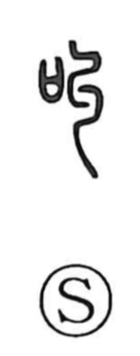

叫

Uncategorized
Kun: sakebu | On: kyou
to shout ・ to cry out ・ to call out
Explanation
Shirakawa takes 叫 as a phono-semantic graph: the mouth 口 supplies the idea of voice, while the right-hand element 丩—an ancient form depicting a twisted cord—serves as the phonetic, giving the sound value (kyu). Yet the character also seems to echo an outcry itself, so it came to mean shouting or calling out. This onomatopoetic force is echoed in related graphs: 喚 portrays the piercing wail of birth, and together in 叫喚 they evoke frantic, loud cries. The old expression 大語叫叫 further conjures a great voice resounding into the distance.